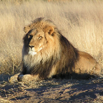

The Lion
The Lion is a really fast, brave animal. The thing I like about the Lion is its ferocity and its braveness to hunt bigger animals. The Lion reminds me of a mentality that is a champion, work with what you have and strive to get better.
Goldfish
The Goldfish will always be sentimental to me because it was my first pet. I really was able to see close up on how they swim, the way they shed skin, and my favorite part as they got bigger was when the goldfish would jump up in the air and back into the tank.

The Cheetah
The Cheetah is an animal I like based off speed to me striving to be fast in sports is something I strive for and the Cheetah reminds me just that. An animal that is made for speed.